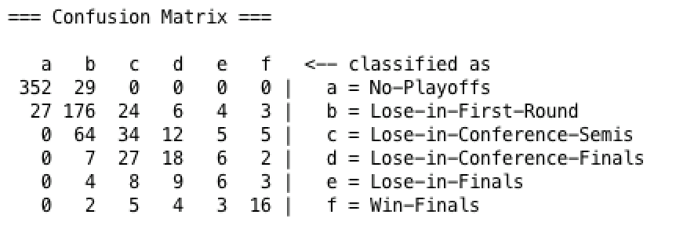

Motivation
Sports betting is a billion dollar industry and with the recent legalization of sports betting, predicting playoff success has never been more important. There are massive sums of money distributed every day and finding a model that can predict the playoff success of NBA teams would be incredibly useful for deriving profit through legalized betting.
Methods
We tested upwards of 42 different attributes on decision trees, logistic regression, multilayer perceptrons, random forests, and k-nearest neighbor to see which created the most accurate model. With respect to decision trees, we tried with and without reduced error pruning. With respect to multilayer perceptrons, we tried adjusting the number of hidden layers and the learning rate. With respect to random forests, we tried manipulating the maximum depth and number of features used. With respect to k-nearest neighbor, we tried adjust the k value. Most of the attributes came from statistics organized on basketball reference (https://www.basketball-reference.com/). However, some of the attributes were created by our group including ORtg-DRtg (Offensive Rating - Defensive Rating), WS2 (Win Shares squared), and dSRS/((SRS+1)/^2) (A statistic involving the change of SRS from year to year). Our best model using 10-fold cross validation was a logistic regression model using 14 different attributes and then a class value as seen in Figure 1.

Figure 1: The 14 attributes used in the logistic regression model
Data
There are 861 data points collected from Basketball-reference website. We included team statistics from each season such as Win Shares, Offensive Rating and Defensive Rating, and the previous year’s playoff result. While pre-processing all the data, we deleted the team names and year so that each data point is able to be analyzed independently. Furthermore, we filtered out instances with missing attributes, and derived more important attributes such as ORtg-DRtg. To account for the changing nature of the league and the beginning of the salary cap era, we only included data from the 1987-1988 onwards. The playoff result has six different classifications: No-Playoffs, Lose-in-First-Round, Lose-in-Conference-Semis, Lose-in-Conference-Finals, Lose-in-Finals and Win-Finals. Instead of splitting the dataset into training and testing, we did 10-fold cross-validation to avoid overfitting.

Figure 2: Stacked bar charts of all of the attributes used in our final model. As one can see, these attributes are able to separate teams into the different classification levels
Results and Analysis
The results from the model show promise. The model is most likely to output the correct classification as seen in Figure 3. However, even though a nearly 70% accurate model using logistic regression for playoff placement sounds successful, but a large portion of this accuracy comes from the model predicting that bad teams won’t make the playoffs, a trivial task that can largely be estimated using just the win percentage of a given team. The model also is quite successful in predicting which teams will lose in the first round, which also makes sense since the best 2 or 3 teams in each conference should beat the 6th, 7th, and 8th best teams. The model then struggles to differentiate between teams that lose in the conference semis, conference finals, and NBA finals. We believe this can be attributed to the human element. Basketball is a sport played by human beings dealing with a large amount of pressure. The “better” team can lose because of this. There is also often not much separating these teams. Any given year it seems as though multiple teams could win the championship as can be seen in the 2018 playoffs where the Houston Rockets were leading the eventual champion Golden State Warriors three games to two before losing games six and seven. However, the model does well predicting the champion at almost 55% since often the champions have distinctive qualities that set themselves apart from other teams such as transcendent scoring or lockdown defense. Another important distinction is that the model has no context. It is given the statistics for one team and then outputs a result. Given the data for other teams, it would be easy to see how a single team compares to the rest of the league, but our model views its inputs in a vacuum which makes the results more impressive.
Figure 3: Confusion matrix of our best logistic regression. The model does very well at predicting whether or not teams will make the playoffs. It also does very well at predicting finals winners and first round losers.
In creating models of the data, we also discovered a lot of the strengths and weaknesses of each model. Decision trees always fared better when using reduced accuracy pruning, as there tended to be overfitting in each tree it produced without it. K-nearest neighbor did not do very well when using just 1 nearest neighbor, and peaked when using 5-10 nearest neighbors. K-nearest neighbor also struggled when many attributes were used because of the curse of dimensionality, and did not scale as well as the other learners as we added attributes. Random forests tended to fair the best when maximum depth was set to 5 and the number of features was set to 4, and performed almost as well as the logistic regression model we used as our final model. Multilayer perceptrons fared best with roughly 10 hidden layers and a learning rate of 0.3. A key weakness of multilayer perceptrons on our data was they almost never classified any teams to lose in the final, signifying the difficulty of predicting that category.
Future Work
There are several ways we could make our model more robust in the future. First, we could try to find more data on advanced analytics to see if there are more predictive attributes we could use. Also, we could try to take more into account and year over year trends, and how that can help predict how teams do in the playoffs. Lastly, we could try predicting results for teams in the context of the league that season, that way we could see if a model could compare teams from one year and correctly assign which playoff round they make it to. This is different from our current project, which analyzes teams outside the context of that league season, and does not necessarily assign the correct amount of teams to lose in each round.
Who did what?
Much of the data collection and data filtering was done by Linqing Zhou. Thomas Praeger did much of the performance analysis on Weka and testing which attributes worked better for each model. Michael Tamkin did much of the writing for the lab reports along with editing the data into the CSVs for use in Weka. However, all three team members did work in all aspects of the project and much of the work was done together.